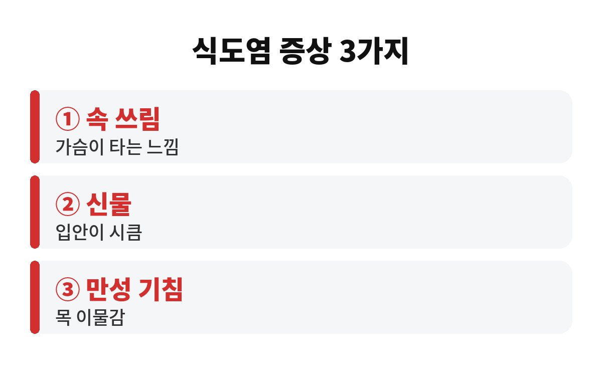

역류성 식도염 증상은 대표적으로 가슴 쓰림, 신물 올라옴, 그리고 의외로 오래가는 마른기침 이렇게 3가지로 나타나는 경우가 많습니다. 만성 기침이 낫지 않는 40·50대라면, 혹시 그 기침이 폐나 목이 아니라 위에서 시작된 건 아닐까 한 번쯤 의심해 볼 만하죠?
요즘처럼 일교차가 크고 밤이 길어지는 가을과 겨울에는 야식, 따뜻한 국물, 술자리가 늘면서 속이 불편하다는 분들이 부쩍 많아집니다. 오늘은 역류성 식도염 증상이 어떻게 나타나는지, 왜 목과 기침으로 오기도 하는지, 그리고 오늘 밤부터 바로 할 수 있는 습관까지 편하게 풀어볼게요.
많은 분이 역류성 식도염이라고 하면 "속이 쓰리고 신물이 올라오는 병" 정도로만 기억합니다. 물론 그게 가장 흔한 모습이긴 해요. 위산이나 위 내용물이 식도 쪽으로 거꾸로 올라오면서 가슴 한가운데가 타는 듯 아프거나, 입안에 시큼한 맛이 도는 거죠.
그런데 위산이 목 근처까지 올라오면 이야기가 달라집니다. 목에 뭔가 걸린 듯한 느낌, 헛기침이 자주 나오는 것, 아침마다 목소리가 갈라지는 것도 같은 뿌리에서 나올 수 있어요. 감기도 아닌데 마른기침이 몇 주씩 이어진다면 목이나 폐만 보지 말고 소화 쪽도 같이 생각해 보세요.
그래서 역류성 식도염 증상은 속 쓰림, 신물, 만성 기침·목 이물감까지 넓게 보는 게 좋습니다. 증상이 이렇게 제각각이라 "나는 속이 안 쓰리니까 아니겠지" 하고 넘기는 분이 많거든요.
위와 식도 사이에는 음식이 거꾸로 올라오지 못하게 막아 주는 문 같은 근육이 있습니다. 이 문이 헐거워지거나 위가 지나치게 꽉 차면 내용물이 올라오기 쉬워지죠. 나이가 들수록 근육의 힘이 약해지니 40·50대부터 증상을 호소하는 분이 늘어나는 것도 이해가 갑니다.
여기에 생활 습관이 불을 붙입니다. 대표적으로 자주 지목되는 것들은 다음과 같아요.
첫째, 늦은 시간의 식사와 야식입니다. 먹고 바로 누우면 중력의 도움을 받지 못해서 역류가 쉬워져요. 둘째, 과식과 기름진 음식, 커피, 탄산, 술, 초콜릿처럼 위산 분비를 자극하거나 문을 느슨하게 하는 것들입니다. 셋째, 복부 비만과 꽉 끼는 벨트나 바지처럼 배를 누르는 요인입니다. 넷째, 흡연과 스트레스도 빠질 수 없죠.
하나하나는 사소해 보여도 직장인의 하루에는 이 요소가 줄줄이 들어 있어요. 점심 후 커피, 저녁 회식, 밤늦은 라면 한 그릇이면 거의 풀세트인 셈입니다.

약을 먹기 전에도 생활 속에서 바꿀 수 있는 게 의외로 많습니다. 전문가들이 공통으로 권하는 것은 잠자리에 들기 최소 2~3시간 전에는 음식을 먹지 않는 것이에요. 위가 비어 있어야 누웠을 때 올라올 것도 줄어듭니다.
두 번째는 한 번에 많이 먹지 않고 천천히 먹는 것입니다. 배가 부를 때까지 먹기보다 80% 정도에서 수저를 놓는 습관이 도움이 돼요. 세 번째는 상체를 살짝 높이고 자는 것인데, 베개를 여러 개 쌓아 목만 꺾기보다는 상체 전체를 비스듬히 올리는 쪽이 낫다고 알려져 있습니다. 네 번째는 식후 바로 눕지 말고 가볍게 걷거나 앉아 있기입니다.
또 하나, 증상을 일으키는 음식은 사람마다 조금씩 달라요. 어떤 분은 커피, 어떤 분은 매운 음식에서 바로 반응이 옵니다. 일주일만 "무엇을 먹은 날 불편했는지" 간단히 적어 보면 나만의 방아쇠를 찾기가 훨씬 쉬워집니다.
생활 습관을 바꿨는데도 몇 주 넘게 증상이 이어지거나, 삼킬 때 걸리는 느낌이 있거나, 이유 없이 체중이 빠지거나, 검은 변이 나오거나, 구토가 반복된다면 미루지 말고 내과나 소화기내과에서 진료를 받으세요. 이런 신호는 단순 역류가 아닌 다른 문제가 숨어 있을 수도 있다는 뜻이거든요.
특히 흡연이나 음주가 잦고 가족 중에 위나 식도 질환 이력이 있다면 정기 검진 때 내시경을 챙기는 게 안전합니다. 진통제나 일부 약을 오래 드시는 분도 의사와 꼭 상의해 보세요.
| 요점 3줄 | ① 증상은 속 쓰림·신물·만성 기침(목 이물감) ② 잠들기 2~3시간 전 야식 끊기 ③ 몇 주 넘게 지속되면 병원 진료 |
오늘 저녁, 혹시 야식 생각 하고 계셨나요? 내 기침이나 속 쓰림이 정말 위와 관련 있을지, 여러분의 경험도 댓글로 나눠 주세요. 도움이 되셨다면 구독해 주시면 다음 건강 이야기도 바로 받아보실 수 있습니다.
※ 이 글은 일반적인 건강 정보이며 진단·치료를 대신하지 않습니다. 증상이 지속되면 반드시 전문의 상담을 받으세요.